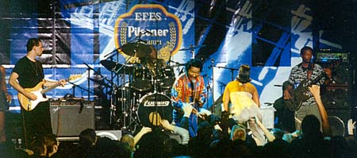
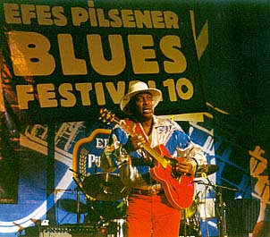
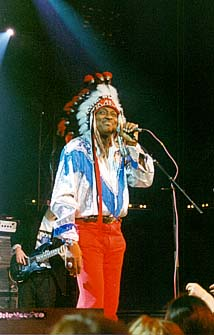

10th Efes Pisner Blues Festival in Moscow
(5-6 of November 1999)
Eddie "The Chief" CLEAWATER
исполняет старинный чикагский блюзовый
стандарт
пера одного из величайших гениев
чикагского блюза Уилли Диксона:
I JUST WANT TO MAKE LOVE TO YOU.
По какому-то стечению обстоятельств, жаркий блюз в Москве совпал с первыми серьезными холодами поздней осени - под ноябрьские неизбывные праздники. Устроитель двухдневного фестиваля - турецкая пивная компания Efes Pilsner, неудивительно, что и атмосфера в зале походила на пивной праздник, вроде Октобер-Фест: длинные столы и лавки. Приличное разливное пиво по сниженной цене дало свой эффект, и обратно на морозец народ выходил заметно покачиваясь. Хочется пожалеть, что свиданка с блюзом превратилась в пивную попойку, однако:
- И на том спасибо! Огромное спасибо, что вообще блюз до Москвы доехал! Со времен БиБиКинга к нам не завозили настоящего блюза, а со времен Элвина Ли - вообще никакого!
- Люди-то взрослые, наверное, способны решать, сколько пива выпить под блюз.
- Опыт посещения норвежского блюз-фестиваля в Нутоддене подтверждает, что не только у нас блюз - это повод пива нахлебаться. Там народ по пути с фестиваля такие зигзаги выписывает, словно пиво у них - 40 градусов.
- Да, в общем-то, шоу Бобби Раша с его дородными телками лучше идет, когда пива принято немерено.

Свое костюмированное шоу Бобби Раш адресует обладателям не самых утонченных художественных вкусов. Соул, фанк и всякую попсятину он смело мешает с блюзом. Пусть техника игры на губной гармонике слабовата у него… Зато дует редко, но метко! И сильно! Вполне покрывает "атакой" очевидные недостатки исполнения... Десятилетиями Бобби Раш колесил по провинциальным танцзалами США. Что наложило свой отпечаток на его музыкальный стиль - угодить всем и расшевелить всех, кто пришел; и на внешний вид - выглядит он классическим чернокожим интетейнером, немного "жиголо". По энциклопедии ему в следующем году исполнится 60 лет, с его собственных слов - ему уже за эту цифру. Но на вид - разве что сорок даже вблизи, а уж на сцене… А уж на сцене он просто искрит от переизбытка энергии. Да и с такими девочками, которых он выводит на сцену, среднестатистический мужчина не управится. Наконец-то Москва могла увидеть, что это такое - BIG HOT MAMA! Они не пели, они просто так ходили. Они не танцевали, они показывали себя. Открыто сексуальная подоплека действия основывается на фанк-ритме сокрушительной мощи. Стоит вспомнить, что слово "фанк" изначально в афроамериканском слэнге обозначало весьма неприличное. И в музыке является отражением истинно африканских страстей - прямых без извилин, мощных и кипучих, как паровой молот. Именно шоу Бобби Раша не маскирует зачем и для чего нужна такая музыка. Рядом с его "привычной" группой самое яркое выступление московских фанк-групп кажется бледной немочью с ритмической точки зрения и полным непониманием сути - с идеологической.
Как говорит Бобби Раш, "Все мое шоу -
ради веселья. У всех свои проблемы. Но если
вы приходите на шоу Бобби Раша, вы забудете
о своих проблемах. Просто посмейтесь,
выпейте кока-колы, или что вас греет, - и
давайте веселиться. Вот для чего все это! Я
здесь сам и для дам и для мужиков, именно для
мужиков я вывожу на сцену дам, чтобы было на
что посмотреть… Ну, ты же видел этих дам, а?…
Ты уже понял…
АЕ: Да, у вас хороший вкус на женщин.
БР: Да, это он - хороший вкус
А вот тут признаюсь, что единственный концерт в программе Нутодденского блюз-фестиваля, который я не досмотрел до конца без уважительной причины - это концерт Бобби Раша. Не досмотрел я и его московский концерт… Горячо, конечно, с музыкальной точки зрения, все-таки… Да и не совсем это блюз… Но не поймите меня неправильно. С историко-научной и культурологической точки зрения, Бобби Раш со своим музыкальным месивом и толстомясыми бабенками - представляет на современной сцене прямое продолжение легендарных "министрел-шоу" прошлого века. А с министрел-шоу и начиналась вся история развлекательной музыки черной Америки. И труд Бобби Раша вызывает огромное уважение. Бесконечные гастроли вдали от бродвеев - мало кто уцелел в этой школе выживания, а он, как иванушка из трех кипящих котлов - вышел из этого пекла молодцом и царевичем! В труднейшие для блюза годы он всегда работал, будучи сам себе промоутером и продюссором. Единственная реклама, позволявшая ему собирать полные залы в кризисные времена, - это впечатления людей, уже видевших и слышавших его прежде; и это самая дорогая реклама, какую не купишь за деньги. Еще недавно о Бобби Раше почти ничего нельзя было прочесть в музыкальной прессе. А в последние два года вдруг пошла одна публикация за другой, и главные блюзовые источники (Livin' Blues, Bluess Access) посвятили ему центральные статьи номера… Это признание, пришедшее после долгих лет трудов и долгих трудных лет. (Почему и в программе фестиваля его подавали "на сладкое"). Только теперь Раш удостаивается почестей истинно народного американского артиста - по заслугам.
Интервью Бобби Раша "Всему Этому Блюзу"
В сети:
Интервью нынешнего года журналу BLUES
ACCESS (с иллюстрациями):
http://bluesaccess.com/No_34/rush.html
На официальном сайте Бобби Раша
единственная информация - полный список его
наград, премий и прочих регалий:
http://www.angelfire.com/md/bobbyr/
Крис Томас Кинг - абсурдность в том, что самому молодому из участников блюз-фестиваля выпало представлять самые "немолодой" блюзовый стиль, архаику кантри-блюза. Еще абсурдней то, что всей душой Кинг никакой не "продолжатель традиций". Тянет его модернизировать и перекраивать:
КТК: Внук блюза - это хип-хоп, понимаете? То, что я делаю, очень отличается от того, что делают старшие блюзмэны. Я добавляю к своему блюзу ритмы хип-хопа, немного рэпа…Это звучание по началу вызывало споры в Америке. Потому что люди, которые ведут блюзовые программы, говорят, что это не блюз, что так не должно быть… Но музыка должна развиваться, должна двигаться дальше. Так что моя музыка представляет мое поколение. А их музыка представляет их поколение. Как и должно быть.
Да кто спорит?! В прошедшем веке блюз менялся не раз, претерпел ряд принципиальных модификаций и, между прочим, пережил многих из своих музыкальных "детей". И, если блюз хочет оставаться живым, он, ясное дело, не должен замерать на месте. Вопрос в оценке очередных модификаций должен ставиться так: блюз ли это в каком-то новом качестве, или блюзовые ингредиенты используются как приправа к новомодным течениям? А то можно и "Sacred Spirit", использовавших сэмплы из классический блюзовых записей, считать родоначальниками нового направления в блюзе (Хотя это все тот же эмбиент с фольклерными приправами). Поскольку Кинг берет уже состоявшиеся поп-стили, и пытается к ним прибавить блюзовое звучание, по-моему, он - второй случай. Мне его опыты кажутся несостоятельными с точки зрения блюза. А как на самом деле - рассудит только время, как всегда это было.
Пока что карьера Криса Томаса Кинга идет по восходящей: его трек включен в заведомо хитовый сборник "Whole Lotta Love", в котором блюзмэны исполняют темы Лед Зеппелин; он играет роль блюзмэна из Дельты 30-х годов в новом фильме студии Диснея. (Вы ждете чего-то хорошего, умного, тонкого от сегодняшней студии Диснея? Ох, боюсь, времена "Книги джунглей" там миновали безвозвратно). Режиссеры - братья Коэн, в главной роли - Джордж Клуни… Фильм, якобы, основывается на "Одиссее" Гомера… Дисней, братья Коэны, блюз и Гомер - смесь настолько безумная, что, может быть, даже и выйдет нечто неординарное… К тому же, среди 7 альбомов Кинга, один, последний - - посвящен именно традиционному акустическому блюзу и был удостоен двух номинаций на Премию имю ДаблЮСи Хэнди в соответствующих категориях..
Кингу в роли солиста-традиционалиста выпало открывать фестиваль. В первый день выступал он совсем неубедительно, но простенькие трюки, вроде мотания гитары над головой или покусывания струн, вызвали положенный рев в публике. Рокнролльные стандартики на акустике довели его фестивальный выход до благополучного завершения. Только в первыйй день гитара в его руках звучало отвратительно вообще и неблюзово в частности - как чужая. На второй день выступал он намного убедительней. И со звучанием гитары словно бы было все в порядке. На второй день выступал он, по-крайней мере, не плохо. Хотя в Москве такой уровень блюзовой гитарной акустики - благополучно пройден и превзойден.
Интервью Криса Томаса Кинга "Всему Этому Блюзу"
В сети:
именной сайт: http://www.christhomasking.com

На мой взгляд, единственный несомненный блюзмэн в программе, единственный, чей ритм и фразировка не могут быть скопированы и повторены уроженцами других континентов - это Эдди "Зе Чиф" Клиаватер. Ветеран чикагского блюза с почти полувековым стажем, он, что ни сыграет: рок-н-ролл, кантри, или босса-нову - все будет блюз.ЭК: Для меня это как готовить суп "Сборная солянка" - для него требуется много ингредиентов, и все вместе скидывается в общую кастрюлю. Смешаешь - и получится отличный суп на обед. Это то же, что я делаю с музыкой. Так получается хорошо. В ней всегда есть то, что близко именно вам. Там, как ты сказал, есть кантри, или рок-н-ролл - что услышишь… Или рокабилли. Раз нравится - значит окей.

В шоу "Вождя" Клиаватера сгодился и индейский головной убор из перьев - для него это дань традиции и любимому прозвищу. Спев выходную арию, он сбросил перья и взял гитару - на левую руку. По возрасту Клиаватер - из того поколения подростков, кто вырос на молодом электрическом чикагской блюзе. Чак Бэрри для него - блюзмэн, несомненно. Из всей троицы именно он давал интервью наиболее скромно, короткими фразами отвечая на вопрос. Бобби Раш все сводил к бесстыдной саморекламе. Кинг желал теоретизировать и пропагандировать и поучать, да так, что не остановишь. Клиаватер же заметно стеснялся телекамеры. Из всей троицы наиболее естественно на сцене жил Клиаватер - ни капли рашевского наигрыша или кинговской неловкости. В этом и проступалась неуловимая эссенция блюза: блюз может идти только естественно, как дыхание, из самой глубины души и до самой глубины. Между прочим, Клиаватеру 65 лет. Орелики из рок-мастодонтов (наших или заморских) с гитарами в руках кажутся молодящимися папиками, то блюзовые дедушки на сцене - метеор энергии, и Клиаватер - не исключение. Свой орокнролленный блюз он исполняет и мастерски, и молодецки-запальчиво. Не блистая впустую беглостью пальцев, он расставляет ноты туда, где без них нельзя; не суетясь создавая зажигательный темп. А что за голос - пробирает рашпилем до самых печенок. Лицо его сияло заразительной улыбкой - и тут же сияющие улыбки пошли по залу. Такое бывает на лучших блюзовых концертах. (Кстати, у нас блюз почти всегда поется какими-то мрачными самоуглубленными личностями. Позиция такая: не хотите - не слушайте, я тут сам по себе, без вас обойдусь... А для тертых блюзовых калачей общение и общность с публикой - главное удовольствие. И нельзя не заметить - удовольствие взаимное. Как оно и должно быть, когдае по любви). Клиаватер привез с собой мощного барабанщика, который не "стучал", который "ухал со всего маху". И, опять-таки, нерешенная европейская загадка: при интенсивной тяжести рок-звучания, пульс оставался живым подвижным - блюзовым.Эдди-вождь, проработавший полвека, особой славы не заработал. Но если вы хотели узнать: "Каков он, блюз чикагских клубов?" - но не было денег на билет до Чикаго - в Москве на ноябрьские праздники 99го года вы могли получить ответ.
ЭЧК: "Чикагский стиль? Я бы сказал, что это более мясистый (чем другие) звук, с энергичным ритмом, подвижным, типа шаффла… И много гитары.
Эдди "Зе Чиф" Клиаватер в этом вопросе, как и в других, был немногословен. На сцене он дал ответ много лучше, чем в интервью. Да и студийные его альбомы - бледная тень по сравнению с его же живыми выступлениями. Настоящему блюзмэну действительно нужна аудитория, слушатели. И как не порадоваться, жаждущая аудитория нашлась для него и в Москве…
Интервью Эдди "зе Чифа" Клиаватера "Всему Этому Блюзу"
в сети:
Биография и достаточно подробная
дискография, включая сайдменскую работу:
http://www.shasta.com/blues/clearwtr.htm
страница на фирме ROUNDER:
http://www.rounder.com/rounder/artists/clearwater_eddy/profile.html
На блюз-фестивале Pocono Вождь получил приз "за лучшую выездку", т.е. "Winner of the Best Entrance Award" - ладно, "За лучшее появление": http://w3.nai.net/~davecarp/chief.htm
Хороший набор в Real Audio: http://www.wolfrec.com/playlist/clearw.htm
В общем и целом, двухдневный фестиваль с программой из трех артистов… Из которых только один - бесспорно, блюзмэн… В других странах эфесовский фестиваль проходит в концертных залах больших отелей - как рекламное мероприятие. В оголодавшей на блюз Москве, куда его не возят "большие промоутеры", и такой фестиваль превратился в событие, и занял одну из центральных концертных площадок. Предрекали чуть ли не провал, а билеты были распроданы за две недели до открытия. И у входа продавались с пятикратной наценкой! Но и спекули не много наварили - они ведь тоже в последний момент бросились скупить билеты.
Удивительно. Откуда была эта уверенность, что Москва блюз слушать не станет? Фестиваль хорош хотя бы тем, что собрал два аншлага. Устроители говорили, если б знали, назначили бы еще дополнительный концерт. Ладно, может на следующий год... Тьфу-тьфу-тьфу.